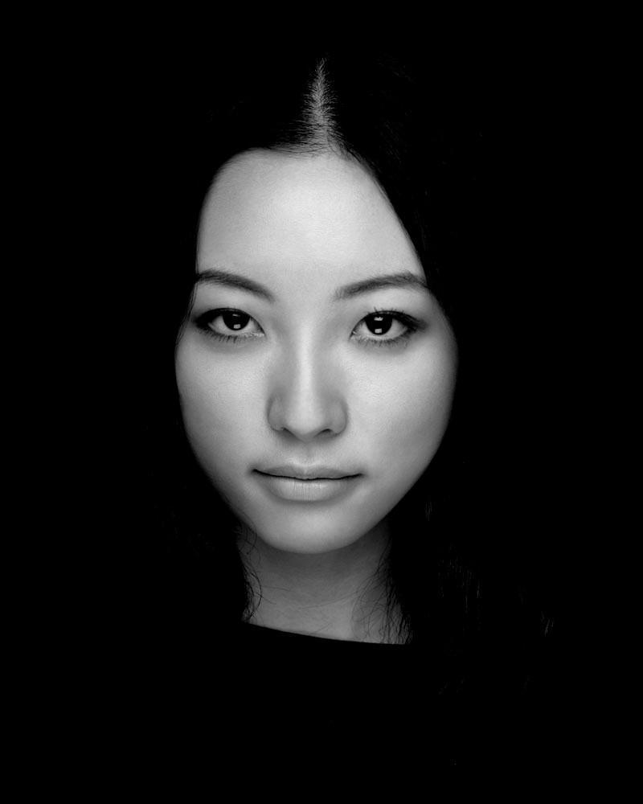
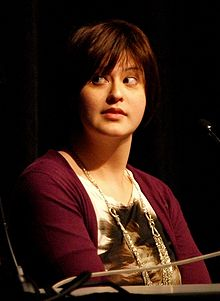

☰ Menu
Encouragement Quotes
“It doesn’t matter who you are, where you come from. The ability to triumph begins with you. Always.” –Oprah Winfrey
“Define Goal. Take Action. Stay Focused. Expect Success. Nothing Less.” - Michele Ruiz
“Intelligence plus character that is the goal of true education.” - MLK
Inspirational Women in CS
Nicole Dominguez is an empathetic and curious human. She is passionate about delightful, usable
experiences made possible by great reusable and scalable code. Nicole works with HTML, Haml/ERBCSS,
Sass, LessPythonDjango,Flask,Javascriptj,Query and Github.
Mariéme Jamme is a Senegalese-born British businesswoman who works extensively across civil society,
government and the private sector to promote economic development,good governance and digital inclusion.
She is also particularly dedicated to empowering women and girls through science, technology,
art, engineering, maths and design (STEAMD).
Fernanda Bertini Viégas is a Brazilian scientist and designer, whose work focuses on the
social, collaborative and artistic aspects of information visualization.Her artistic visualizations have been
exhibited in venues such as the New York Museum of Modern Art, the Boston Institute of Contemporary Art,
and the Whitney Museum of American Art.
Kavita Krishnaswamy is a Ph.D. candidate in Computer Science at the University of Maryland.
She is developing several prototype robotic systems that will support transferring, repositioning, and personal care,
with a focus on accessible user interfaces for control that are feasible for people with severe disabilities.

Esther Nam started the PyLadies meetup group. She taught herself how to code and is
now an accomplished software engineer.

Kim Swift is an American video game designer best known for her work at Valve with games
such as Portal and Left 4 Dead. Swift was featured by Fortune as one of "30 Under 30" influential
figures in the video game industry. Swift was described in Mental Floss as one of the most recognized
women in the industry.